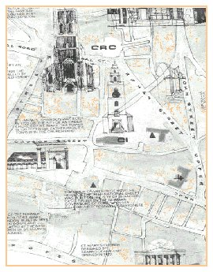
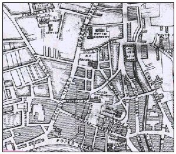

The area described as the North Strand, the waterfront area at the western end of what is now Pope's Quay, was the most valuable land in the area. The medieval church of St Mary Shandon and Shandon Castle are also recorded, but by the date of the survey the castle has passed its heyday as the centre of Elizabethan authority in Munster.
Shandon in 1654 is essentially a creation of the middle ages. The principal thoroughfares all have medieval origins as do the Market Place; Shandon Castle Lane and Church Lane peter off into the countryside on their eastern ends and the area along the Kiln river is entirely underdeveloped.
By 1759 the North Channel of the Lee has become the Port of Cork. This development had been in train since at least the 1690's, by which time the old port, the river along modern Castle Street, had been filled in, and the Customs House had moved to modern Emmet Place. In 1711 Alderman Knapp built a quay wall on the North Bank. In 1713 the North Channel was deepened. in 1718 the widow Pope was given permission to build a quay on the North Bank. This movement of the port to the North Channel reflected a major change in the pattern of trade in the city.
It was not economic history alone that left its mark on Shandon. During the Williamite wars of the 1690's, Cork was besieged and Shandon castle served as an artillery position for the Williamite forces. The castle was never rebuilt subsequent to the seige and was eventually demolished in 1750.

Shandon was not immune to these developments. In 1875 there were sixty-one butter merchants occupying premises in Shandon. As late as 1911, while pockets of overcrowding existed, the average occupancy of dwellings in the area was six persons. The continued success of the Butter Exchange into the 1880's delayed the rapid social decline evident in other parts of the inner city.
By the 1920's Shandon had entered a new phase. The Butter Exchange closed in 1924. O'Gormans hat factory took over the market building while Daly's margarine factory took over the Firkin Crane building.